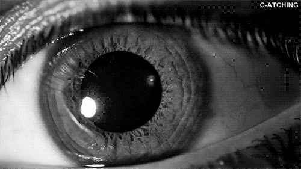
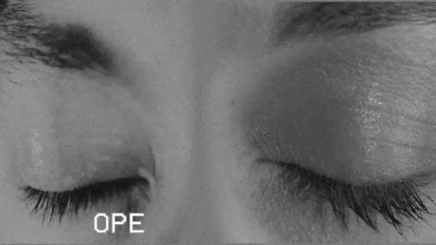

Fotografía estenopeica
Club de Ciencia 23/24
IES Isaac Díaz Pardo
Cantas fotos sacades ao día?
Sabedes como funciona a vosa cámara?
Como un ollo!


Diafragma - Pupila
Diafragma - Pupila
Obturador - Pálpebras
Obturador - Pálpebras
Enfoque - Cristalino
Sensor - Retina

Sensor - Retina

Sensor - Retina

Procesado - Cerebro
Camara dixital: formatos
A cámara garda a imaxe en diversos formatos con e sen pérdida de información.
Camara analóxica: revelado das imaxe

Camara analóxica: revelado das imaxe
Proceso químico
- Líquido de revelado
- Líquido de paro
- Líquido de fixación
- Aclarado
- Secado
- Positivado
Camara analóxica: revelado das imaxe
Positivado?

Cámara estenopeica

Sensor
Empregaremos papel fotográfico directo
Diafragma
Teremos un buraco feito cunha agulla.
Non poderemos polo tanto regular a apertura igual que nunha cámara convencional.
Obturador
Enfoque
Non teremos iso
Mans a obra!
Construción Cámara Estenopeica
Paso A: Pintamos a caixa
Precisamos que a caixa sexa por dentro o máis escura posible polo que imos pintala de negro.
Paso B: Reforzamos esquinas e bordos da tapa.
Reforzaremos as esquinas da caixa con cinta illante negra para evitar que entre a luz.
Paso C: Construímos diafragma e obturador
Construíremos un obturador con papel de aluminio e cinta aillante negra
Paso D: Algún calculín sempre se fixo
Resolveremos algúns problemas